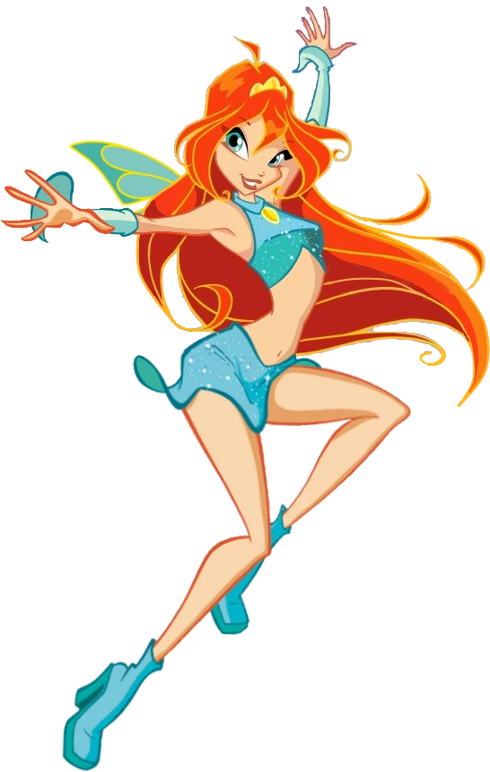
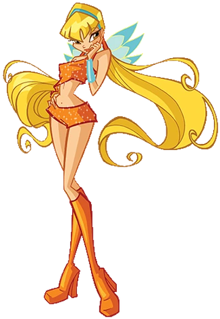
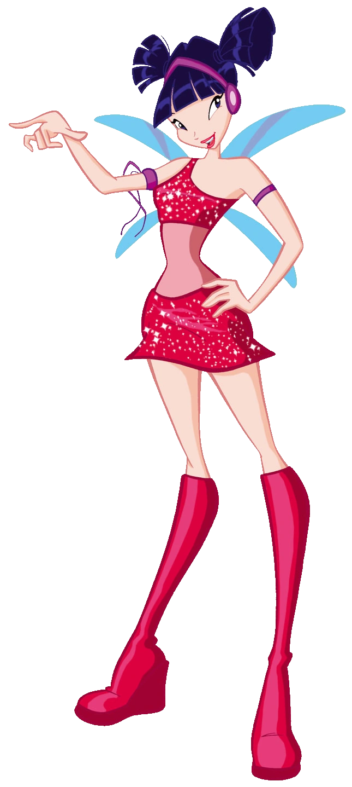
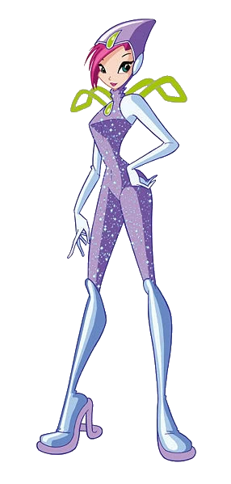
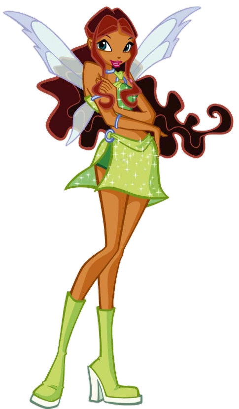

| IMAGE | CHARACTER INFO | ABILITIES |
|---|---|---|
|  | Bloom is the Fairy of the Dragon Flame and the leader of the Winx Club. Her pet cat is named Kiko. She is sky's fiancèe. | ♡ Fire-based attacks |
|  | Stella is the artistic Fairy of the Shining Sun. She is Brandon's fiancée. | ♡ Light-based attacks ♡ Comic relief of the Winx team |
 |
Flora is the gentle Fairy of Nature. She is Helia's girlfriend. | ♡ Obtains her powers from plants |
|  | Musa is the Fairy of Music and is Riven's girlfriend. She writes and performs her own music. | ♡ Manipulates sound waves to form her attacks |
|  | Tecna is the fairy of technology. She is Timmy's girlfriend. | ♡ She is the team's science expert. |
|  | Aisha is the Fairy of Waves. | ♡ She is able to control and manipulate a pink fluid called Morphix. |